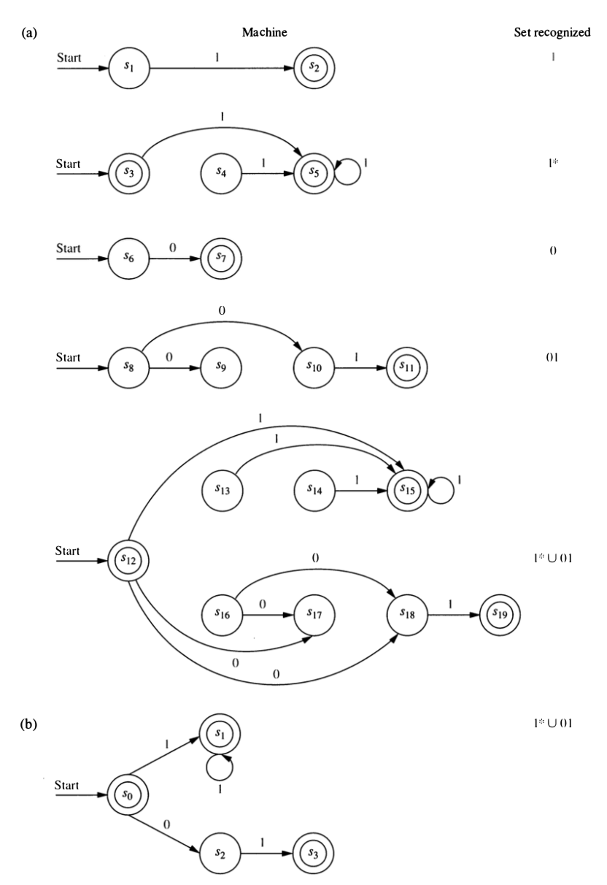

4 Regular Expressions and Languages
4.1 Operations on Languages
Since languages are sets, we can use set operations like \(\cup\) and \(\cap\) to create new languages. But there are some additional operations that we will use.
- concatenation of strings: \(xy\) is the concetanation of strings \(x\) and \(y\) (\(x\) followed by \(y\))
- concatenation of sets: \(AB = \{ xy \mid x \in A \land y \in B \}\)
- power: \(A^0 = \emptyset\); \(A^1 = A\); \(A^{n+1} = A^n A\). (Power is iterated concatenation.)
- Kleene star: \(\displaystyle A^* = \cup_{n = 0}^{\infty} \; A^n\)
Which of these strings belong to \(\{0, 01\}^*\)?
- 01001
- 10110
- 00010
Which of these strings belong to \(\{101, 111, 11\}^*\)?
- 1010111
- 1011011
- 1110111
- 11110111
4.2 Regular Expressions
4.2.1 Syntax
A regular expression over an input alphabet \(I\) is defined recursively.
- \(\bm{\emptyset}\) and \(\bm{\lambda}\) and regular expressions.
- \(\bm{x}\) is a regular expression for each \(i \in I\).
If \(\bm{A}\) and \(\bm{B}\) are regular expressions, then
- \(\bm{A}^*\) is a regular expression
- \((\bm{A} \cup \bm{B})\) is a regular expression
- \((\bm{AB})\) is a regular expression
4.2.2 Semantics
Each regular expression represents a language as follows.
- \(\bm{\emptyset}\) represents the empty langauge: \(\emptyset\)
- \(\bm{\lambda}\) represents language that contains only the empty string: \(\{\lambda\}\)
- For each \(x \in I\), \(\bm{x}\) represents the language containing only \(x\): \(\{x \}\)
- If \(\bm{A}\) and \(\bm{B}\) are regular expressions representing languages \(A\) and \(B\), then
- \((\bm{AB})\) represents \(AB\)
- \((\bm{A \cup B})\) represents \(A \cup B\)
[Note: This is often written
(A|B)in programming languages.] - \(\bm{A}^*\) represents \(A^*\)
[Note: This is often written as
A*in programming languages.]
The langauges represented by regular expressions are called regular languages (how creative).
- In Rosen 7, the definition of regular expression is missing boldface in a couple places. Find them.

What is the difference between \(\bm{1}\) and \(1\)? between \(\bm{\lambda}\) and \(\lambda\)? between \(\bm{\emptyset}\) and \(\emptyset\)?
Describe in words the languages represented by each of these regular expressions:
a. \(\bm{10^*} \quad\) b. \(\bm{(10)^*}\quad\) c. \(\bm{0 \cup 01}\quad\) d. \(\bm{0^* \cup 01}\quad\) e. \(\bm{0 (0 \cup 1)^*}\quad\) f. \(\bm{(0 \cup 01)^*}\quad\)
Can each of the languages above be recongized by an NFA? a DFA?
What would we need to do to show that every regualar language can be recognized by an NFA? Give it a try and see how far you get. Which parts are easy? Which are trickier? Why?
4.3 Recognizing Regular Languages with NFAs
Show that the empty language (\(\emptyset\)) is recognized by an NFA.
Show that the language \(\{\lambda\}\) is recognized by an NFA.
Show that if \(a \in I\), then the langauge \(\{a \}\) is recognized by an NFA.
Show that if \(A\) and \(B\) are each recognized by an NFA, then \(AB\) is, too.
[Hint: Let \(N_A\) and \(N_B\) be the NFAs that recognize \(A\) and \(B\). How can you use them to build a new NFA that recognizes \(AB\)?]
Show that if \(A\) and \(B\) are each recognized by an NFA, then \(A \cup B\) is, too.
[Hint: Let \(N_A\) and \(N_B\) be the NFAs that recognize \(A\) and \(B\). How can you use them to build a new NFA that recognizes \(A \cup B\)?]
Show that if \(A\) is recognized by an NFA, then \(A^*\) is, too.
[Hint: Let \(N_A\) be the NFA that recognizes \(A\) How can you use it to build a new NFA that recognizes \(A \cup B\)?]
Explain how 1–6 above show that every regular language is recognized by an NFA.
Explain how 7 implies that every regular language is recognized by a DFA.
The method just outlined is automatic (you could fairly easily write a computer program to do the translation from regular expression to NFA), and it provides a proof that all regular languages can be recognized by an NFA. But it might produce an NFA with more states than is minimally required. Create an NFA that recognizes \(\bm{1}^* \cup \bm{01}\). Do this two ways:
- Following the steps outlined in 1–6.
- Any way you like, but using fewer states than in part a.
- What is the smallest (fewest states) NFA you can find that recognizes \(\bm{1}^* \cup \bm{01}\)?
Show that if \(A\) is recognized by an NFA, then the complement of \(A\) (\(\overline{A} = A^C\)) is too.
[Hint: There is an easy way and a hard way – use the easy way.]
4.4 Solution to problem 4.3.9
